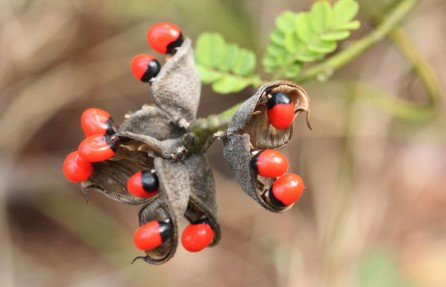
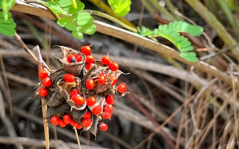

PHOTOS:


Botanical Name: Abrus precatorius
Common name: Ratti
The rosary pea, native to tropical regions of India and Southeast Asia, grows in warm, humid environments. It thrives in well-drained soil and is commonly found in forest edges, clearings, and cultivated areas. It is cultivated by sowing seeds in well-drained, fertile soil with ample sunlight. It requires a warm, tropical climate and regular watering. Plants are often grown on trellises or supports to accommodate their climbing nature and maximize growth. It has traditional uses in treating various ailments, including fever, cough, and digestive issues. However, its seeds contain the toxic compound abrin, which can be fatal if ingested. Its medicinal use is highly limited due to these toxicity concerns and should be approached with caution.